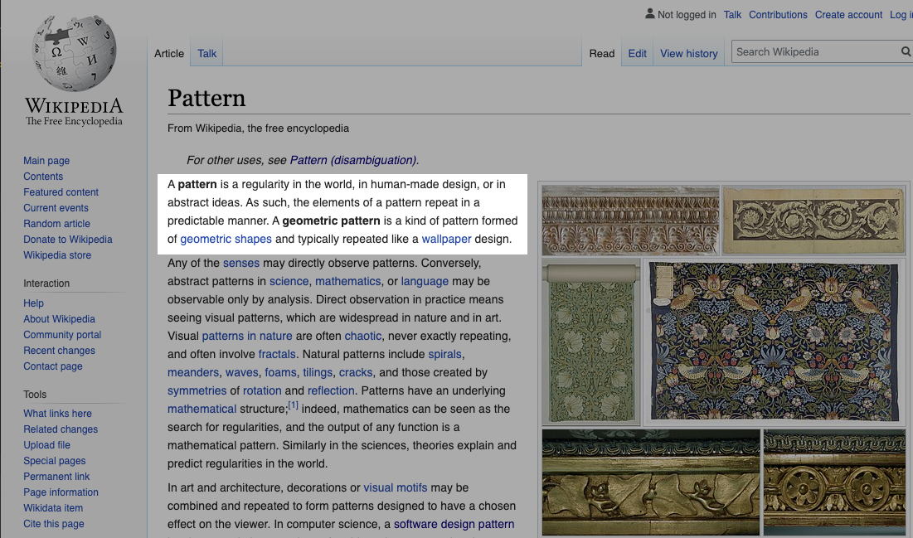

JavaScript
Design Patterns
What is Pattern

What is Software Design Pattern?
- Typical solution to commonly occurring problem in software design
- Pre-made blueprints that you can customize and use in your code
- Not a library or code snippet
- Not an algorithm
- Blueprint, not a recipe
What does Pattern consist of?
- Intent of the pattern briefly describes both the problem and the solution.
- Motivation further explains the problem and the solution the pattern makes possible.
- Structure of classes shows each part of the pattern and how they are related.
- Code example makes it easier to grasp the idea behind the pattern.
Who invented patterns?
- Patterns are discovered, not invented
- Repeated solution -> Detailed description -> Name
- 1977 - Christopher Alexander. A Pattern Language: Towns, Buildings, Construction
- 1994 - Design Patterns: Elements of Reusable Object-Oriented Software - 23 patterns
- The GoF book
Why should I learn patterns?
- Verified and tested solutions
- Standardized code
- Common Developer Language
Patterns - the hard way

Pattern Types
- Creational
- Structural
- Behavioral
Module Pattern
Singleton

Problem
- Ensure that a class has just a single instance.
- Provide a global access point to that instance.
Real-world Example
Code
const logger = (function () {
let loggerInstance;
function createInstance() {
const instance = new Object('Some logger config');
return instance;
}
return {
getInstance: function () {
// creates instance if it doesn't exist
if (!loggerInstance) {
loggerInstance = createInstance();
}
return loggerInstance;
}
businessLogic: function() {/* ... */}
};
})();
const logger1 = logger.getInstance();
const logger2 = logger.getInstance();
// Outputs: true
console.log(user1 === user2);
Pros and Cons
|
|
import { CoreModule } from '../../../../core.module';
import { FeatureModule } from '../../../../feature.module';
import { MaterialModule } from '../../../../material.module';

If all you have is a hammer, everything looks like a nail.
Further reading
- https://refactoring.guru/design-patterns
- Дизайн-патерни — просто, як двері. Андрій Будай